Добрый день, меня зовут Константин, мне 28 лет, работаю на фрилансе и в ближайшие полчаса я буду вашим преподавателем в дисциплине изучения HTML и CSS. Давайте познакомимся! *Каждый представляется по очереди в формате Имя, возраст, профессия, причина освоить новую профессию и уровень знания английского языка*
Прежде всего, определимся в терминологии. HTML - это Hypertext Markup Language, или дословно - язык гипетекстовой разметки. Как и CSS, он НЕ является языком программирования, а используется для структурирования и отображения веб-страницы и её контента. HTML - это основа, скелет любого веб приложения, если взять за аналогию книгу - то HTML это страницы, переплет, буквы, корешок, сама обложка. В свою чередь CSS - Cascading Style Sheets (каскадные таблицы стилей) поможет придать Вашему сайту желаемый вид со всеми шрифтами, фоновыми картинками и даже анимацией или 3D-эффектами, это то, что вдыхает жизнь в веб-сайт и так же, как и в дальнейшем языки программирования (PHP, JS), он берет за основу HTML и работает с визуальным стилем веб-сайта. Если продолжить аналонию с книгой - то CSS - это чернила, текстура бумаги, иллюстрации, дизайн обложки, шрифты, отступы и много другое.
По умолчанию размещение всех элементов на странице осуществляется в нормальном или базовом потоке. Что это значит? Основное - это вывод элементов на страницу браузер осуществляет в том порядке, в котором они следуют в HTML коде. CSS свойство position — это одно из свойств с помощью которого можно изменить базовое поведение элементов в потоке. Другими словами, данное свойство позволяет «выдернуть» любой элемент из потока документа и разместить его в другом месте относительно окна браузера или других элементов на веб-странице.
Создадим новую папку. С помощью Sublime text созданим новый файл, назовем его index.html, выберем расширение html
По аналогии с index.html создадим в рабочей папке еще один документ, под назавнием style.css, расширение css
Поскольку мы уже имеем кое-какие представления о структуре HTML страницы и тегов, пропишем стандартные свойства HTML, подключим наш файл CSS
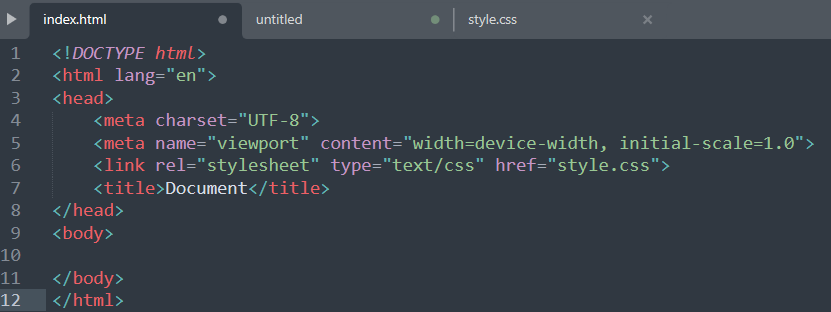Мы рассмотрим позиционирование на примере создания 5 фигур, квадратных боксов разных цветов. Создаем 5 div-ов, и присвоем каждому 2 класса, один общий, и по одному индивидуальному для каждого объекта. с помощью CSS зададим им размер и цвет
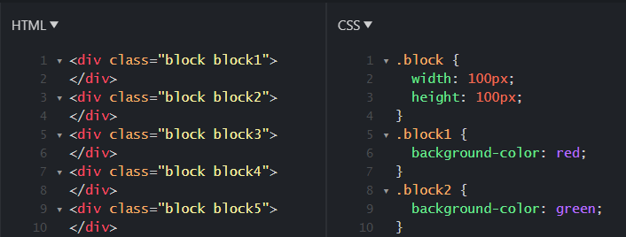 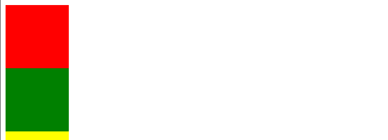static (статичное позиционирование);
relative (относительное);
absolute (абсолютное);
fixed (фиксированное);
sticky (липкое).
Свойство position со значением static элементам назначается по умолчанию. Это значение означает что элемент является не позиционированным, т.е. отображается как обычно (в потоке).
Явная установка элементу CSS-свойства position: static может понадобиться только в том случае, когда нужно переопределить другое значение position установленное элементу.
Установка CSS свойств для задания положения элемента left, top, right и bottom никакого влияния на него не оказывают, т.к. его местонахождение определяется потоком документа.
Относительно позиционированный элемент ведёт себя как элемент в потоке за исключением того, что его текущее положение можно при помощи определённых CSS свойств сместить. К этим CSS свойствам относятся left, top, right и bottom. Например, для того чтобы элемент сдвинуть вверх или вниз относительного его исходного положения к нему нужно применить CSS свойство top или bottom:
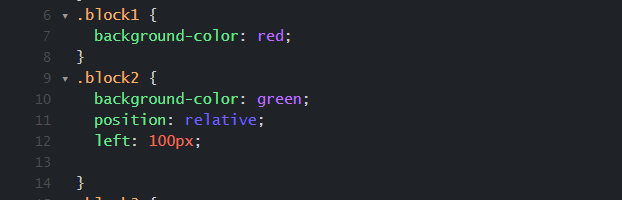 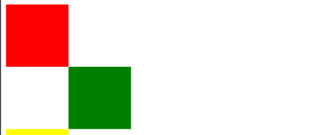Если в некоторой области страницы оказываются несколько позиционированных элементов, то они перекрывают друг на друга в определённом порядке. При этом по умолчанию выше оказывается тот элемент, который ниже описан в коде. Но порядок перекрытия элементов (их положение перпендикулярное экрану, т.е. вдоль оси Z) можно изменить. Осуществляется в CSS это с помощью свойства z-index. z-index может принимать отрицательные и положительные целые число, auto и 0. Но, хорошей практикой является использование в качестве z-index чисел из диапазона 0-9999.
При этом чем больше у элемента значение z-index, тем ближе он располагается к нам, и, следовательно, перекрывает все элементы в данной области, у которых значение z-index меньше.
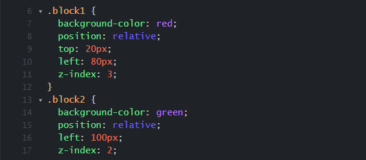 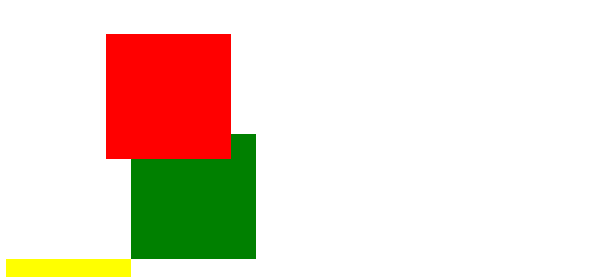Этот тип позиционирования позволяет разместить элемент именно там, где вы хотите. Позиционирование выполняется относительно ближайшего позиционированного предка. Если среди предков у элемента с position: absolute нет позиционированного элемента, то в этом случае он будет позиционироваться относительно HTML страницы, т.е. элемента body.
Когда элементу устанавливаем position: absolute без указания CSS-свойств (top, left, right и bottom), определяющих его положение, он будет находиться в том месте, в котором он был бы расположен, если бы находился в потоке (при этом при вычислении его положения учитываются только элементы, расположенные до него в коде и находящиеся в потоке). При этом другие элементы его видеть не будут, и, следовательно, они будут расположены на странице, не обращая никакого внимание на него. Сейчас мы присвоим второму квадрату (зеленому) абсолютное позиционирование и сдвинем его вправо на 100px
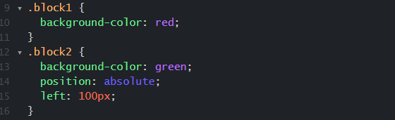 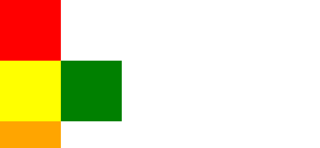Внутри отпозиционированного элемента создать 2 квадрата со сторонами по 50 пикселей (в два раза меньше, чем родительский элемент), разного цвета, например, color: gray; и color: black; Переместить один из них на 50 пикселей вправо, что бы получилось как на картинке.
Фиксированное позиционирование похоже на абсолютное, но в отличии от него оно всегда привязывается к краям окна браузера (viewport), и остаётся в таком положении даже при скроллинге страницы. Фиксированное позиционирование применяется для закрепления на странице навигационных меню, кнопки «вверх», панелей с социальными кнопками и многого другого.
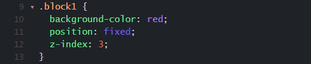Липкие элементы (CSS position sticky;) очень похожи на фиксированные (position: fixed;), поскольку они сохраняют свое положение на экране, даже когда пользователь прокручивается страницу вверх или вниз. В чем разница? Липкий элемент остается ограниченным родительским контейнером, в котором он находится.
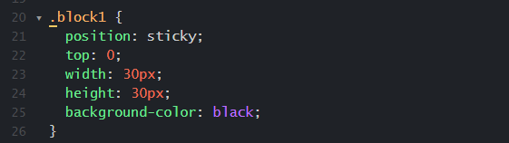Обратите внимание на то, что это значение свойства position работает ТОЛЬКО вместе с указанием отступа от края родительского элемента (который, как мы знаем, тоже должен иметь position, отличный от static), в данном примере указано top: 0;